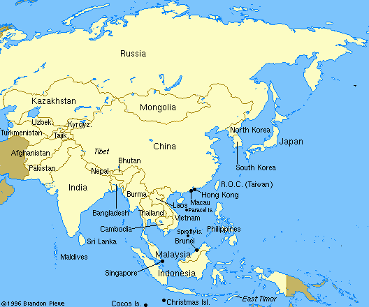

Indigenous signs for countries in Asia

 David Bar-Tzur
David Bar-Tzur


- Asia
- [A], PO away, FO up, moves in a CCW circle parallel to the chest and opens to a [5]. For a movie of this sign, see Dictionary of Sign (ASL) - Asia.

Flags: World flag database.
Map: Virtual Tourist.
For a quick, interesting resource for facts about this and other countries,
try Mystic Planet - The New Age directory of Planet Earth.
Explanation of glossing system used
(to understand how I describe the signs in this dictionary)
- Afghanistan (Afghanestan)
- [V] knocks the gathered fingers against the DS of the head.8
- Bangladesh (Bangladesh)
- [5^], PO up, FO away, place hand about 12 inches to the side of NDS hip. Move hand toward hip then up toward shoulder then flip hand to PO down.
- Cambodia (Kampuchea)
- [B], PO > DS, FO down, twists at wrist and closes to an [S], PO up, FO away. For a movie of this sign, see http://ia311506.us.archive.org/3/items/sign_cambodia/sign_kampuchea.MPG.
- China (中国)
- (1) [bO] traces across chest from NDS to DS and then descends.1 (< Mao jacket.) For a QuickTime movie of this sign, see ASL browser - China. (2) [1^] traces across chest from NDS to DS and then descends. For a QuickTime movie of this sign, see NEEDS Outreach: China. (3) NDH [G], PO > DS, FO away, [1], PO > NDS, FO away, taps NDH from above. For a QuickTime movie of this sign, see NEEDS Outreach: China. [< from the first ideogram ("character") in jung gwa the indigenous name for "China" (see the image at the beginning of this entry). The indigenous name means "Central Kingdom."]
- India (
 )
) - [A dot] twists FT slightly twice at center of forehead. For a QuickTime movie of this sign, see NEEDS Outreach: India. (< mark on forehead of married women in India.)
- Indonesia (Indonesia)
- [H], PO towards, FO > NDS, waves at wrist, closer to signer and further from signer, while moving > DS. For a QuickTime movie of this sign, see ASL browser - Indonesia.
- Japan (日本)
- (2h)[L], POs ><, touch FTs and separate while closing to (2h)[bO].3 For a QuickTime movie of this sign, see ASL browser - Japan.
- Korea (한)
- South Korea (한국)
- Typically you will see American interpreters sign the indigenous form as: [B] rests FT on scalp, moves away while changing to [B^], then returns as a [B] and touches cheek. To see a video of this sign, go to NEEDS Outreach: Korea. It seems that Korean Sign Language does this without bending the handshape and adds another part to this which appears in a number of country signs. (Compare some of the entries for foreign countries at Á¦¸ñ¾øÀ½.) The full glossing for the indigenous sign is (2h)[B] touch respective sides of the scalp, move away and retouch the temples + (2h)[5:], POs ><, FOs up, twist FTs away. To see a video of this sign, go to Çѱ¹(Korea).
- North Korea (북한)
- (2h)[B^], POs ><, FOs up, NDH is held in neutral spacae and DH is held under chin and moves forward utnil it meets the NDH , striking its radial side (the pinky) against the ulnar side (index finger) of the DH + (2h)[5:], POs ><, FOs up, twist FTs away. To see a video fo this sign, go to ºÏÇÑ(the north Korea).
- Malaysia (Malaysia)
- (2h)[5], POs ><, FOs up, alt. circles respective sides of head.1 For a QuickTime movie of this sign, see ASL browser - Malaysia.
- Mongolia (Mongol Uls)
- (2h)[B], POs > signer, FOs ><, alt. move towards and away from signer while brushing FTs + [1], touches backhand to center of forehead.1
- Myanmar (Myanmar)
- (2h)[B], FOs up, press palms together.10 (< PRAY.)
- Nepal (Nepala)
- [G], PO away from signer, FO up, moves > DS while ascending and descending slightly. (< mountains on horizon.) For a QuickTime movie of this sign, see Woordenboek Nederlands - Vlaamse Gebarentaal: Nepal.
- Pakistan (Pakistan)
- [bC], PO > NDS, FO up, closes to a [bO] and touches the tip of [1], PO > DS, FO up. (< the British fingerspelled letter "P") For a n animation of this sign, see Welcome to Pakistan Association of the Deaf.
- Philippines (Pilipinas)
- [P], PO down, FO > NDS, taps top of [S], PO down, FO > DS. For a QuickTime movie of this sign, see NEEDS Outreach: Philippines.
- Singapore (新加坡)
- [S], PO down, circles and contacts [B], PO down.5 For a drawing of this sign, see link at footnote 5.
- Sri Lanka (
 )
) - FT of [1] circles [loose B], PO > DS, FO up. For a drawing of this sign, see http://www.rohanaspecialschool.org/dictionary/15SriLanka&World.pdf
- Taiwan (台湾)
- [S], PO away, FO up, twists at mouth. For a QuickTime movie of this sign, see NEEDS Outreach: Taiwan. (< eating sugar cane.)
- Thailand (Prathes Thai)
- [1] touches nose then moves downward.1 For a QuickTime movie of this sign, see ASL browser - Thailand. (< elephant.)
- Tibet (
 )
) - (2h)[B], DH PO > NDS, FO away, NDH PO up, FO away. DH fingers rub against NDH palm while DH closes to [A] twice with hands staying in place. To see a video of this sign go to Tibet Deaf, China Tibet Lhasa at time 0:21.
- Vietnam (Việt Nam)
- (1) [V], PO away, FO up, descends in a wavey pattern, ending with an [N], FO down. To see a video of this sign, go to VSDIC and copy and paste "Việt Nam" in the box labelled "Từ Việt:" and click on "Chợn". (2) (2h)[B] make a peak above the head, and then separate while descending and touch cheeks. To see a video of this sign, go to VSDIC and copy and paste "Việt Nam (1)" in the box labelled "Từ Việt:" and click on "Chợn". (2) [H], PO > singer, FO up, runs FT down nose and then touches NDS shoulder. To see a video of this sign, go to VSDIC and copy and paste "Việt Nam (2)" in the box labelled "Từ Việt:" and click on "Chợn".
List of sources cited
1. Signs around the world: Cities [Videotape]. Burtonsville, MD: Sign Media.
2. Yin-Chee Goodstadt, R. (1972). Speaking with signs: A sign language manual for Hongkong's Deaf. Hongkong: Government Printer.
3. Sandager, O. K. (1986). Sign languages around the world North Hollywood, California: OK Publ.
4. Native sign informant (name lost).
5. http://www.geocities.com/signsing/signs.htm#singapore (Singapore Sign Language: Signs - Singapore), which is no longer extant.
6. From a handout I was given that included indigenous signs I have seen in other reference works, so it seems properly researched.
7. Native born Cambodian American Deaf woman.
8. INTERPRETING TIDBITS: Terrorism. Gate Communications.
9. From Tegnviser. Click on "Klikk her for å starte TegnViserFlash", or if that fails, "klikk her", and then scroll to entry.
10. From sw symbols for the different countries _ here : Mexico. Nancy Cole from Las Cruces, NM, writes "I'm working with a student from Burma... They sign Burma with two hands pressed together (like in "pray")."

Home